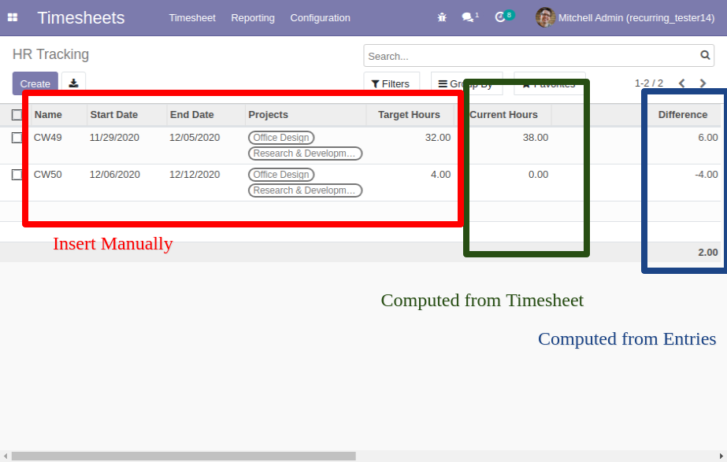

Overtime Tracking
Track your Overtime
exemplary use cases:
- As an employee, you want to log your hours and quickly see
the current overtime
Screenshot with Function Description
Please take attention: At the moment
this Module is for 1 User Databases
